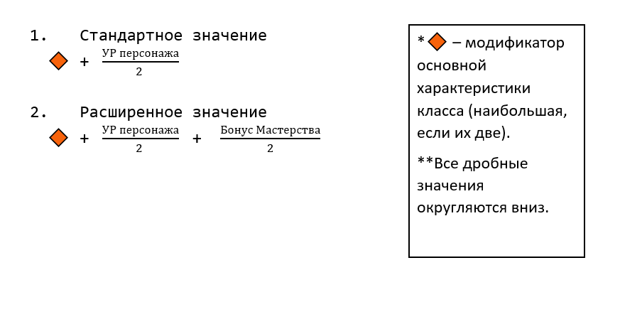

В SMORCH сильно переработана система скиллов (общее назание для совокупности всех умений, способностей и заговоров), а также введена совершенно новая система создания персональных скиллов, создаваемых конкретно под персонажа. В этой статье написано о всех механиках связанных с ними.
Скиллы делятся на три типа: Умения, Заговоры и Способности.
Умения (иногда Пассивка) — пассивный скилл, который сам срабатывает при определённых осбтоятельсвах, или даёт какой-то бонус, например к характеристикам. Создавая персонажа вы должны придумать 1 умение. Единственно отличие в этом случае, что в качестве умения вы может попросить какое-нибудь персональное оружие, заместо пассивной способности (Примеры умений: [Иммунитет к эффекту Горение] или [Ваш персонаж со старта получает персональное оружие "Прототип"]).
Заговоры — активный скилл, активация которой чаще всего требует основного действия, но не тратит ничего взамен. Создавая персонажа, вы придумываете 1 заговор. (Примеры заговоров: [Вы выстреливаете из глаз лазером, который наносит 1к10 урона] или [Вы восстанавливаете 3 здоровья и получаете 1к6 временных хитов]).

Способность — активный скилл, активация которой требует особого ресурса — ячеек. Количество ячеек определяется по одной из формул, приведённых сбоку: Все классы используют Стандартное значение, за исключением Медика, ..., которые используют Расширенное значение. Создавая персонажа, вы придумываете 2 способности.